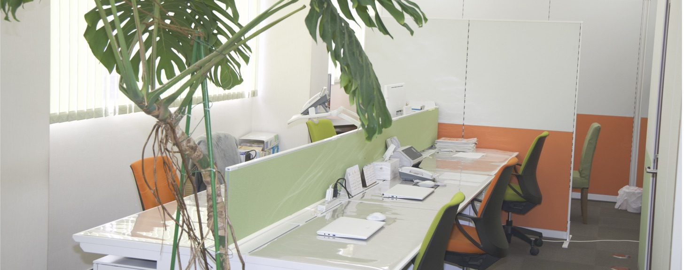

きとみ税理士法人は・・・
止まらない。
旧長岡税務会計事務所は、創業以来11年連続増収を達成。
その実績を踏まえ「きとみ税理士法人」として第二創業期へと突入しました。
川越本部のほか、東北、東京、静岡、大阪と全国に事務所を設立し、
今後もさらにその歩みをスピード感をもって進めてまいります。
INFORMATION 2024年、長岡税務会計事務所は「きとみ税理士法人」として生まれ変わりました。

ABOUT
なぜ、きとみ税理士法人で
きとみ税理士法人について
なぜ、きとみ税理士法人で
働くのか？
ENVIRONMENT
全国へ拡大中。
全国へ拡大中。
今、この組織は最も面白い。

きとみ税理士法人は、川越から全国へ拠点を広げ、急速に組織が成長しています。この第二創業期は、新しい役割や挑戦が次々と生まれる、最も面白いフェーズ。そのため、子育て・介護・受験など、ライフスタイルに合わせた働き方も柔軟に選択できます。「成果を出せば自由を得られる」。これが私たちのカルチャーです。
男女比3:7
女性が多く活躍中。ベテランスタッフが多く、人生も仕事も頼れる先輩たちが、確実にあなたの成長をサポートします。
働き方の自由度MAX
仕事はパソコン１台でどこでもできるので、在宅勤務も選択でき、子育てや介護などの両立も可能です。また、やるべきことさえやれば時間も自由です。
公平な評価制度
給与は、顧問報酬の約40%を還元することを基本としています。成果と給与が直結するので、自由裁量の度合いが高いと言えます。
INTERVIEW
きとみ税理士法人を選んだ理由